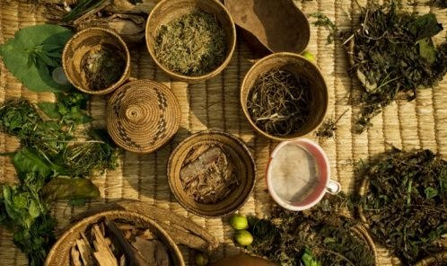

Лечебные, дурманящие и ядовитые травы
На Поэдруме полно дурманящих трав, видов табака, кофе и чая. Различные целебные травы и зельеварение в целом — ключевое направление медицины на Поэдруме. Яды также имеют большое распространение.

Лечебно-бытовые травы
Анис — однолетнее растение до 50 см; плоды с лёгким ароматом, используются в ароматерапии, чае и лекарствах; настои мочегонные. Легко спутать с ядовитыми. Фенхель — жёлтый мясистый корень, зонтичные соцветия; помогает против микробов и успокаивает нервную систему. Хельба — отвар семян применяется при болезнях пищеварительной системы, очищает почки и кишечник, снижает холестерин. Сенутетраста — лотосовое растение с крупными белыми или розовыми цветами; отвары — жаропонижающее и кровоостанавливающее. Аар — мелкие голубые цветы, распускающиеся ночью; растёртые листья — от ожогов, высушенные соцветия — обезболивающее. Гем-и-Емем — применяется при болях в груди и горле как ингаляция. Ших — антибактериальное средство для перевязок и дезинфекции ран. Харгаль — используется при болезнях печени и почек, простуде, кашле, бронхите. Мисвак — веточки и корни кустарника; уменьшает кровоточивость дёсен, облегчает зубную боль. Пустынная примула — листья съедобны, отвар — отхаркивающее, помогает при ревматизме.
Ядовитые травы
Папавер — сок в малых дозах болеутоляющий, в неразбавленном виде смертельный яд; противоядие — в течение 30 минут. Мандрагора — корень иногда напоминает человеческую фигуру; ягоды ядовиты, симптомы через 15 минут, смерть от остановки дыхания. Аконит — всё растение ядовито, даже запах; поражает нервную систему, симптомы через 5 минут. Дефала — куст каменистой пустыни; яд из коры и сока смертелен при попадании в кровь почти мгновенно. Эуфорбия — сок вызывает волдыри и жжение, опасен для глаз. Чемерица чёрная — при передозировке рвота, головные боли, расстройство зрения.
Дурманящие травы
Нимфея — крупные голубые цветы; используется как дурманящее средство, вызывает расслабление, затем афродизиакальный эффект, при бесконтрольном употреблении — галлюцинации. Дикая Дагга — при курении расслабляет, поднимает настроение. Хортис — высушенный и добавленный в еду вызывает сильнейшие галлюцинации, судороги и беспамятство; в больших дозах — мучительная смерть; по слухам, компонент «Яда Королей». Тол — вьющееся растение; высушенный добавляется в курительные смеси, вызывает лёгкое привыкание, избавляет от голода. Мукуна — сильный афродизиак. Пойоматли — при раскуривании действие около 15 минут, при средних дозах фрагмент времени выпадает из памяти.
География Мериона · Поэдрум · Травы